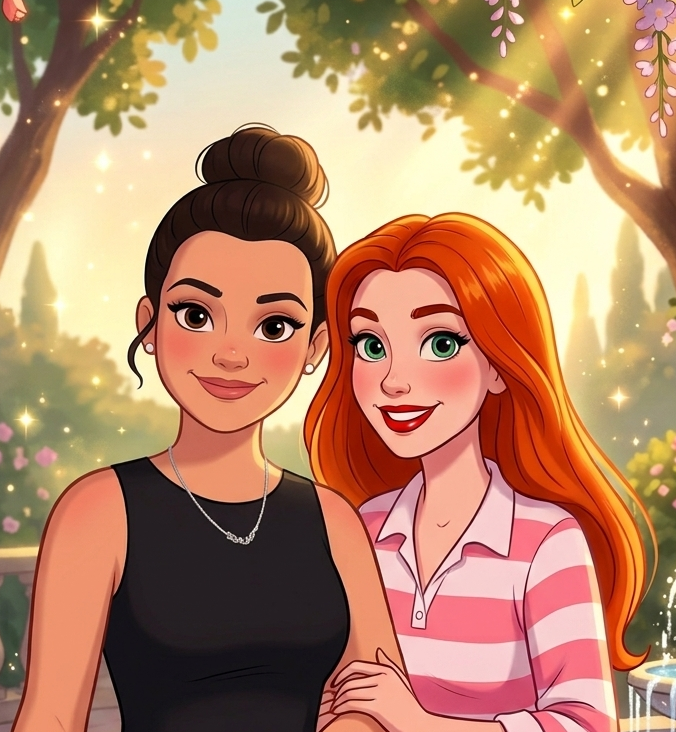

Elisabet Soria Zaitseva
Estudiante de 1º de DAW (Desarrollo de Aplicaciones Web).
¡Hola! Somos las desarrolladoras detrás de este mundo mágico de Wonderland.

Estudiante de 1º de DAW (Desarrollo de Aplicaciones Web).
Estudiante de 1º de DAW (Desarrollo de Aplicaciones Web).
La razón principal por la que decidimos diseñar y desarrollar esta base de datos es porque nos parece un tema muy interesante. Creemos que el universo Disney ofrece una oportunidad fantástica para construir una plataforma web muy creativa.
Es un mundo que cuenta con un potencial enorme y muchísimo contenido por explotar, desde películas memorables y personajes icónicos hasta las canciones que marcan nuestra infancia.
Para hacer posible la magia de nuestra API y la interfaz de esta página, estamos trabajando con el siguiente stack tecnológico: